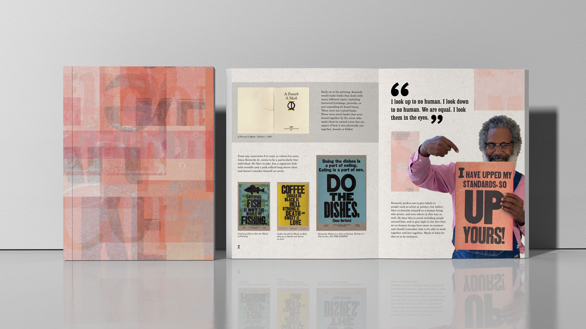
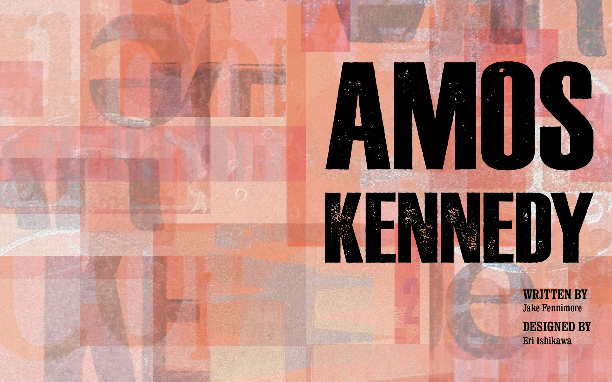
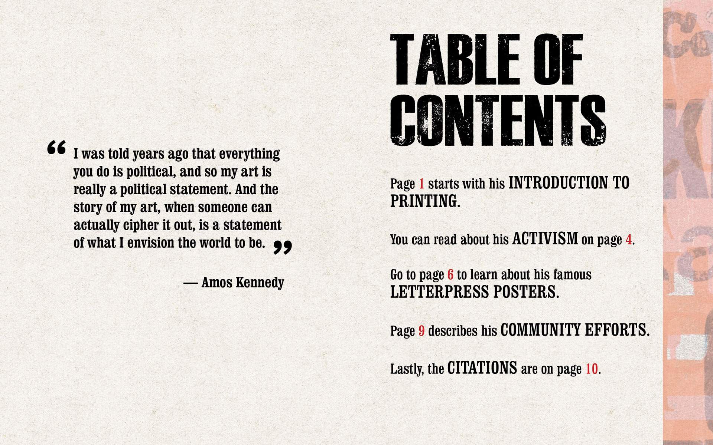
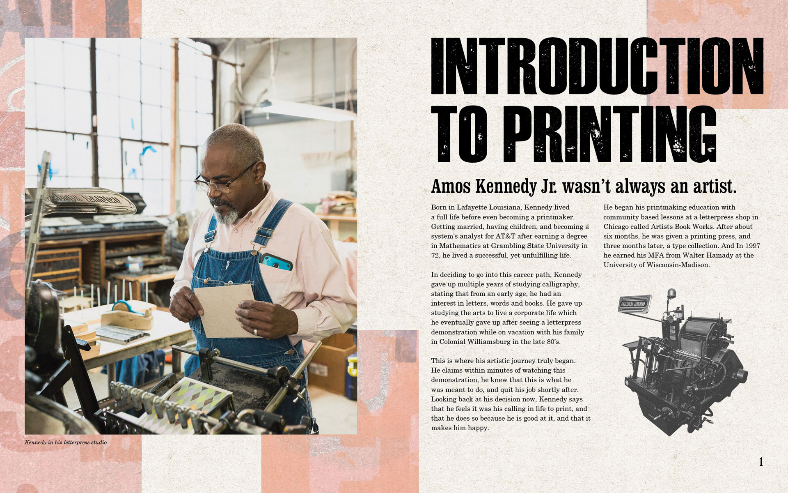
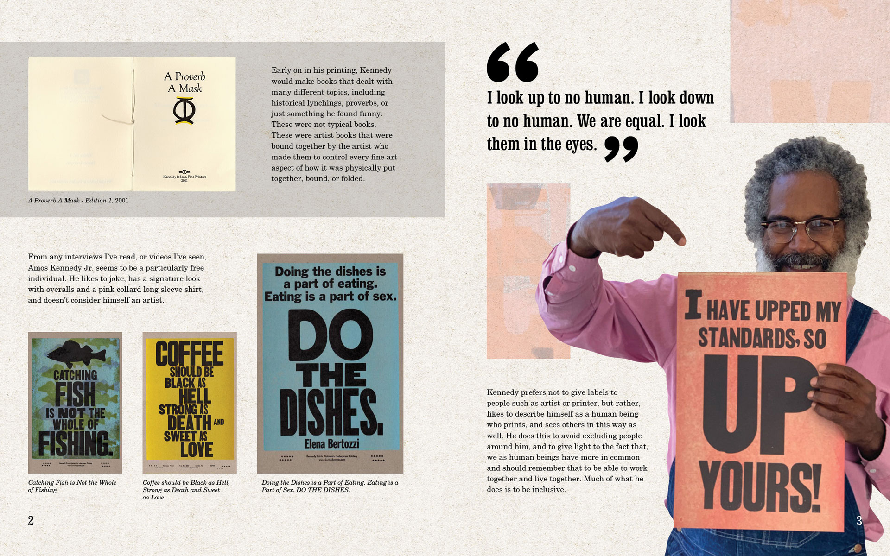
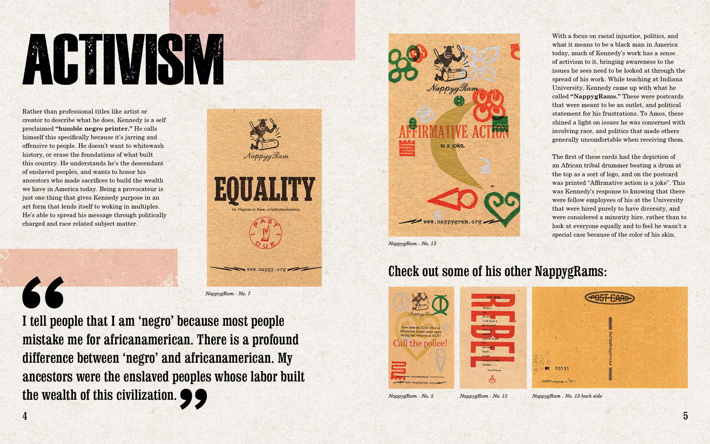
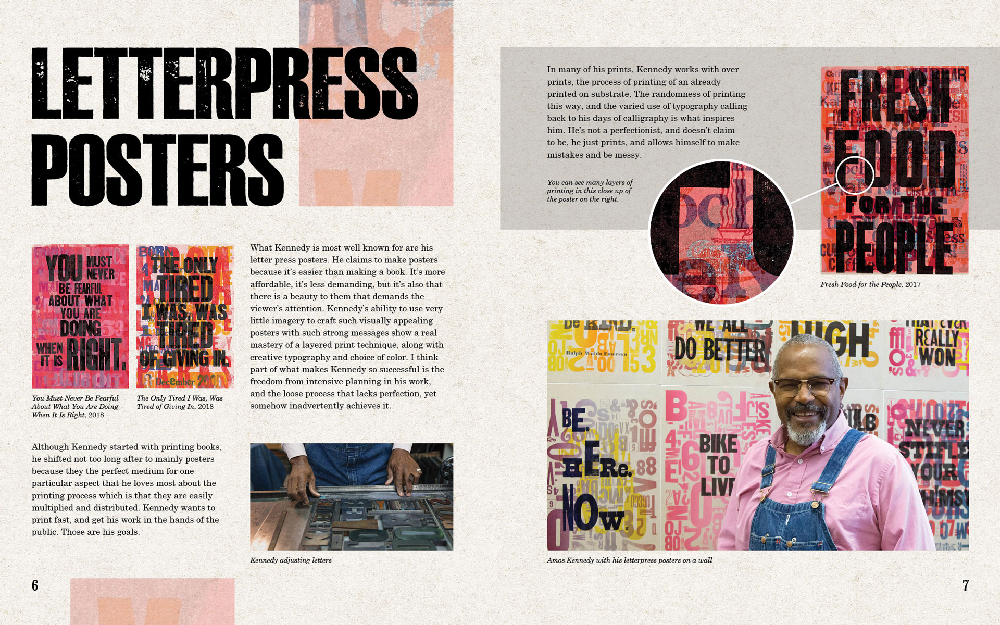
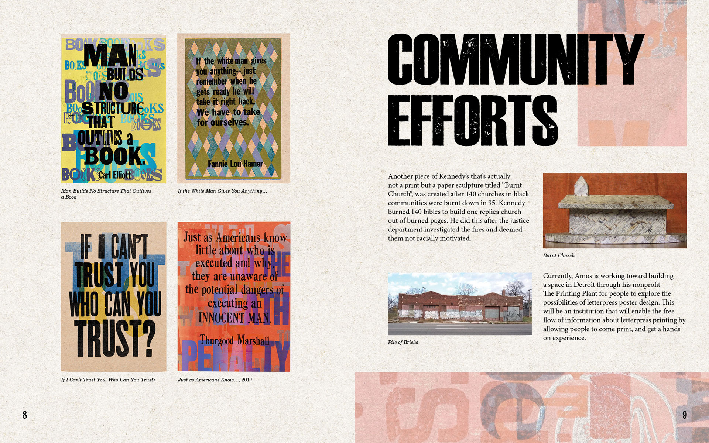
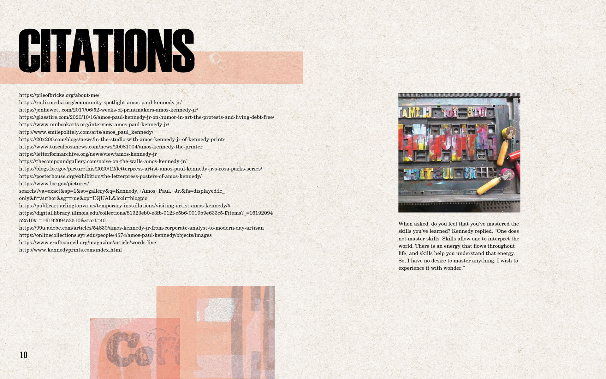

Amos Kennedy Booklet
Challenge: This was my final project for the year in graphic design class. I was tasked to design a booklet as a tribute to a well-known graphic designer using written copy provided to me. I was assigned Amos Kennedy, known for his letterpress designs.
Solution: There’s a lot of energy and boldness in Kennedy’s works, so I represent that in the booklet by using colorful snippets from his letterpress posters and bold, gritty lettering. The decorative snippets are balanced with the images of the designer’s works so they do not clash, and only serve to support the content.

See all the pages:








Credits
Mockup courtesy of GraphicGoogle